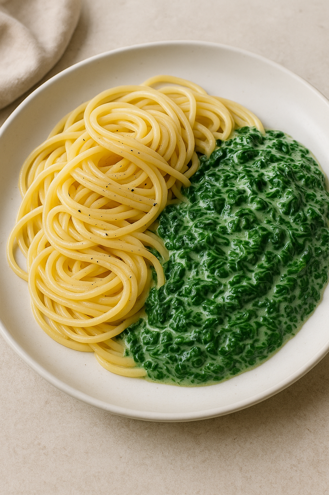

Spaghetti mit Spinat
Rezeptliste

Ein leckeres und gesundes Gericht mit frischem Spinat
Zutaten:
- 400g Spaghetti
- 2 EL Olivenöl
- 2 Knoblauchzehen, fein gehackt
- 300g frischer Spinat, gewaschen und grob gehackt
- 200ml Sahne
- 50g geriebener Parmesan
- Salz und Pfeffer nach Geschmack
- Muskatnuss, frisch gerieben (optional)
Zubereitung:
- Die Spaghetti nach Packungsanweisung in reichlich Salzwasser al dente kochen. Abgießen und beiseite stellen.
- In einer großen Pfanne das Olivenöl erhitzen. Den gehackten Knoblauch darin kurz anbraten, bis er duftet.
- Den frischen Spinat hinzufügen und unter Rühren zusammenfallen lassen.
- Die Sahne in die Pfanne gießen und zum Kochen bringen. Mit Salz, Pfeffer und Muskatnuss abschmecken.
- Die gekochten Spaghetti zur Sauce in die Pfanne geben und gut vermischen, sodass die Nudeln gleichmäßig mit der Sauce bedeckt sind.
- Den geriebenen Parmesan unterrühren, bis er geschmolzen ist.
- Sofort servieren und nach Belieben mit zusätzlichem Parmesan bestreuen.